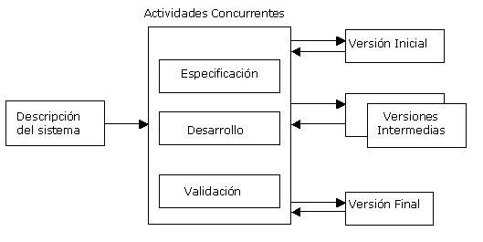

Para cada una de las fases o etapas listadas en el ítem anterior, existen sub-etapas (o tareas). El modelo de proceso o modelo de ciclo de vida utilizado para el desarrollo, define el orden de las tareas o actividades involucradas,6 también define la coordinación entre ellas, y su enlace y realimentación. Entre los más conocidos se puede mencionar: modelo en cascada o secuencial, modelo espiral, modelo iterativo incremental. De los antedichos hay a su vez algunas variantes o alternativas, más o menos atractivas según sea la aplicación requerida y sus requisitos.

En términos generales, se puede distinguir, en la Figura 4, los pasos generales que sigue el proceso de desarrollo de un producto software. En el modelo de ciclo de vida seleccionado, se identifican claramente dichos pasos. La descripción del sistema es esencial para especificar y confeccionar los distintos incrementos hasta llegar al producto global y final. Las actividades concurrentes (especificación, desarrollo y validación) sintetizan el desarrollo pormenorizado de los incrementos, que se hará posteriormente.
El diagrama de la Figura 4 muestra en forma muy esquemática, el funcionamiento de un ciclo iterativo incremental, el cual permite la entrega de versiones parciales a medida que se va construyendo el producto final.6 Es decir, a medida que cada incremento definido llega a su etapa de operación y mantenimiento. Cada versión emitida incorpora a los anteriores incrementos las funcionalidades y requisitos que fueron analizados como necesarios.
El incremental es un modelo de tipo evolutivo que está basado en varios ciclos Cascada Realimentados aplicados repetidamente, con una filosofía iterativa.10 En la Figura 5 se muestra un refino del diagrama previo, bajo un esquema temporal, para obtener finalmente el esquema del modelo de ciclo de vida Iterativo Incremental, con sus actividades genéricas asociadas. Aquí se observa claramente cada ciclo cascada que es aplicado para la obtención de un incremento; estos últimos se van integrando para obtener el producto final completo. Cada incremento es un ciclo Cascada Realimentado, aunque, por simplicidad, en la Figura 5 se muestra como secuencial puro.